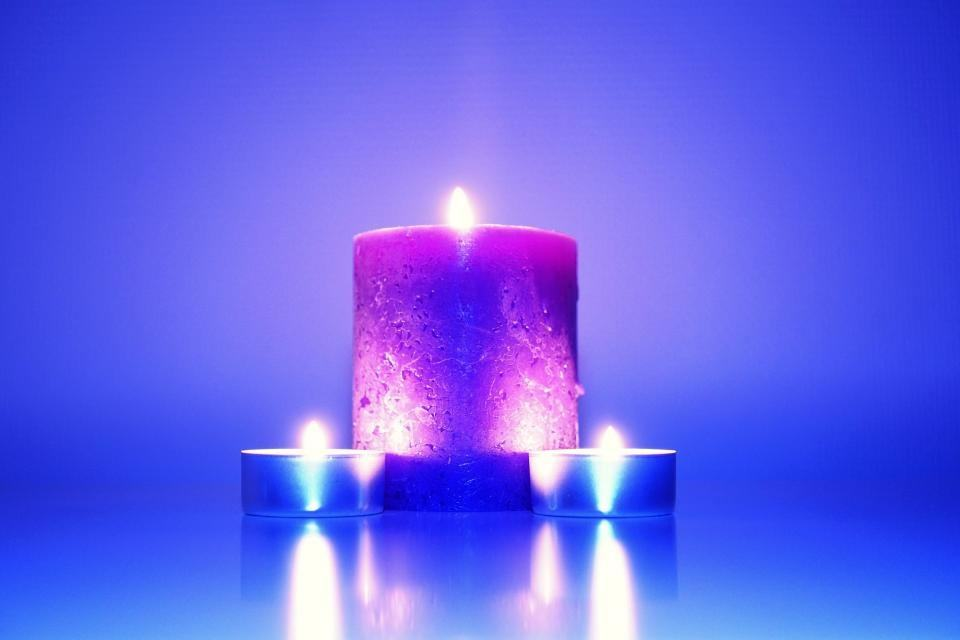
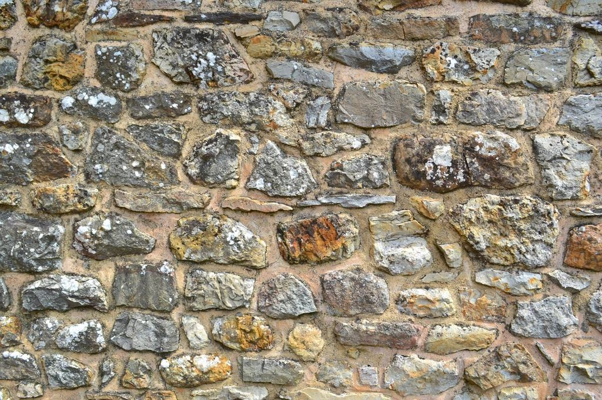

Tjänster
I dag är vi elva medarbetare. Kistorna snickras av Lessebo Kistsnickeri av furu från Kronobergs skogar, urnorna drejas av en keramiker i Kosta och våra två begravningsbilar går på el.
Vilket avsked önskar ni?

Naturnära begravning
Vi använder kistor utan lack, metallbeslag eller syntetiskt foder, och svepningen är i oblekt linne. Ceremonibuketten binds av en florist i Alvesta med blommor som växer i Sverige just den årstiden.
Valen påverkar inte priset nämnvärt – en furukista kostar ungefär lika mycket som en lackerad.

Askspridning och minneslund
Askan kan spridas i minneslund, i naturen eller över vatten. För spridning utanför kyrkogården krävs tillstånd från länsstyrelsen, och vi skriver ansökan åt er.
Handläggningstiden i Kronoberg är vanligtvis tre till fem veckor.

Ceremonier utomhus
Vi har hållit borgerliga ceremonier i hagmarker, på bryggor och i trädgårdar. Vid regn finns tält och filtar i bilen.
Officianten Lars Ek har lett över 300 borgerliga ceremonier.

Återbrukade gravstenar
Kyrkogårdarna har hundratals återlämnade gravstenar. Vi låter ett stenhuggeri i Lenhovda slipa om dem och hugga ny text.
En omslipad sten kostar ungefär hälften av en ny och sparar transporter från Kina eller Indien.
Fyra steg, utan stress
- 1

Första telefonsamtalet
Vi berättar vad som händer de närmaste dagarna och vilka val som går att göra – utan att något behöver bestämmas direkt.
- 2

Valen och vad de betyder
På mötet visar vi kistor, urnor och blommor och vad de innebär för miljön och priset.
- 3

Ceremonin
I kyrkan, kapellet eller ute i det fria. Vi kör dit med elbil och är på plats hela dagen.
- 4

Redovisningen
Ni får faktura, klimatredovisning och hjälp med det som återstår, som gravsten och bouppteckning.
Certifierat grönt, granskat varje år
- ISO 14001Miljöledningssystem certifierat sedan 2014, med årlig extern revision.
- SBF-auktoriseradeAuktoriserade av Sveriges Begravningsbyråers Förbund.
- Svanenmärkt kistaVår standardkista från Lessebo Kistsnickeri är Svanenmärkt.
- Fossilfria transporterElbilar och HVO100 för alla körningar, redovisat i vår årliga miljörapport.